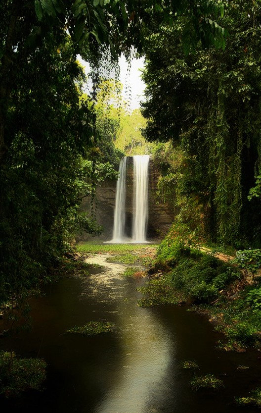

SOCCSKSARGEN, also known as Region 12, is a region located in the southern part of Mindanao island in the Philippines. Its name is an acronym derived from the names of its constituent provinces and cities: South Cotabato, Cotabato City, Sultan Kudarat, Sarangani, and General Santos City. SOCCSKSARGEN is known for its cultural diversity, natural resources, agricultural productivity, and bustling urban centers.
South Cotabato is a province known for its fertile agricultural lands, scenic landscapes, and cultural heritage. It is home to the scenic Lake Sebu, known for its floating restaurants and traditional T'nalak weaving. South Cotabato also offers attractions like the Seven Falls, Mount Matutum, and the T'boli Museum, which showcases the indigenous T'boli culture.
Cotabato City is an independent component city within the region. It serves as the regional center and is known for its cultural diversity, blending influences from various ethnic groups. The city offers attractions such as the majestic Grand Mosque, Tamontaka Church, and the vibrant Tamu Market, where visitors can experience the local cuisine and products.
Sultan Kudarat is a province known for its agricultural productivity, scenic landscapes, and cultural heritage. It offers attractions such as the stunning Lake Buluan, the tranquil Kalamansig Beach, and the culturally significant Sultan Kudarat Monument. The province is also known for its colorful festivals, such as the Kalimudan Festival, which showcases the indigenous culture and traditions.
Sarangani is a province known for its stunning coastlines, pristine beaches, and rich marine biodiversity. It offers opportunities for diving, snorkeling, and beach activities. Sarangani is also home to the captivating Sarangani Bay, Gumasa Beach, and the culturally significant Kiamba White Beach.
General Santos City, often referred to as "GenSan," is a highly urbanized city and the regional economic center. It is known for its bustling fish port and tuna industry. The city offers attractions such as the iconic General Santos Fish Port Complex, the vibrant KCC Mall, and the lively General Santos City Fish Market. General Santos City is also famous as the hometown of world-renowned boxer Manny Pacquiao.
SOCCSKSARGEN showcases the cultural diversity, natural beauty, and economic vibrancy of Mindanao. With its stunning landscapes, cultural heritage, and bustling urban centers, the region provides a wide range of experiences for visitors. Whether it's exploring natural wonders, immersing in the local culture, or enjoying the city's lively atmosphere, SOCCSKSARGEN offers a dynamic and captivating destination for travelers.